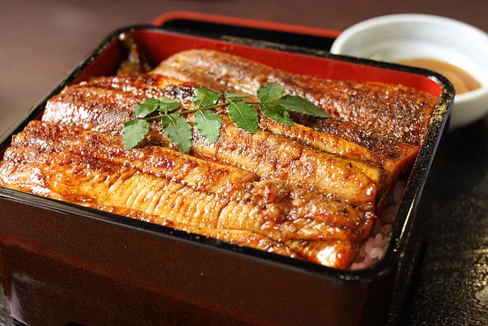

UnaDon (鰻重)

UnaDon (鰻重)
UnaDon is a dish originating in Japan. It consists of a donburi type large bowl filled with steamed white rice
and topped with fillets of eel (unagi) grilled in a style known as kabayaki, similar to teriyaki.
Price: Large: $12.5 Regular: $9.5